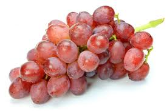

- ニューピオーネ（山形県産）
昔からあるぶどうで有名な品種です。一粒一粒が大きくてしっかりしているにも関わらず、ふさから取れにくいので贈答用に最適です。甘みは強くて昔から愛されているオーソドックスなぶどうの味がします。種なしでコスパがとてもいい品種です。

- シャインマスカット（山梨県産）
ぶどう品種としてはまだ新しいです。シャインマスカットの魅力は種も皮も食べられて、甘さが強めなところです。身はぎっしり詰まっていて、身がふさからボロボロと落ちてしまうことも少ないので、プレゼントに最適なぶどう品種として人気が出ています。

- ナガノパープル（長野県産）
ナガノパープルは、甘みだけでなく酸味も少しほしいという方におすすめのぶどうです。皮まで食べられて種もありません。とても食べやすくておすすめですが、少しふさから身が取れやすいという点と、たまに小粒の身が混じっているという点から、3位になりました

- 甲斐路（山形県産）
赤いマスカットと呼ばれることもあるマスカットの香りがほんのりするぶどうです。細長い実が特徴的です。少し味にクセがあり種もありますが、皮が薄いのでむかずにそのまま食べられます。実がふさから落ちづらく日持ちもするので、贈答用に向いているぶどうです。

- 巨峰（山梨県、長野県産）
巨峰は知らない方がほとんどいないほど、日本ではなじみのあるぶどうの品種ですよね。甘い香りと、口に残る濃厚な甘さが不動の人気を誇っています。種はありませんが皮をむかないと食べられません。食べ終わる頃には手がベタベタになってしまうので、5位です。

- オリンピア（山形県産）
はちみつのような濃厚な甘みが特徴的なぶどうの品種です。知る人ぞ知る高級ぶどうで、オリンピアという品種を知らない方も多いかと思います。種があり皮をむかないと食べられませんが、糖度が20度以上でとても甘いです。1ふさにつく実の量が少ないので6位です。

- ハニーシードレス（山形県産）
ハニーシードレスは知る人ぞ知るぶどうの品種です。見た目からマスカットのような味がするのかと勘違いされがちですが、デラウェアの味に似ています。デラウェアより酸味が少なく、ハニーと名前にある通りはちみつのような甘さが特徴です。

- デラウェア（山形県産）
昔から子供のおやつなどで食べられているぶどうの品種なので、スーパーでよく見かける方も多いのではないでしょうか。皮は食べれませんが「種なしぶどう」の愛称で親しまれています。甘みと酸味のバランスがいいですが、水分が多く傷みやすいので家庭用向きです

- マスカットベリーA（福岡県、熊本県産）
マスカットベリーAは古くから存在するぶどうの品種で、甘みも酸味も両方しっかりとほしい方におすすめです。果汁が多くみずみずしい品種なので、ワインにも使用されています。品種改良で最近は種なしになりましたが、傷みやすくご贈答用としてはあまり向きません。

- ナイアガラ
ナイアガラは水分が多いことから、生食よりもワインやジュースに使われているぶどうです。甘みもありますが、それ以上にしっかりとした酸味があります。ご年配の方はなじみ深いぶどうですが、水分が多い分傷みやすいのでご贈答用には向いていません。